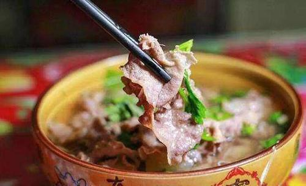
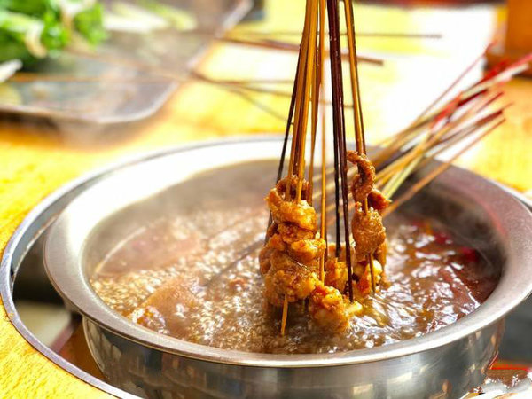
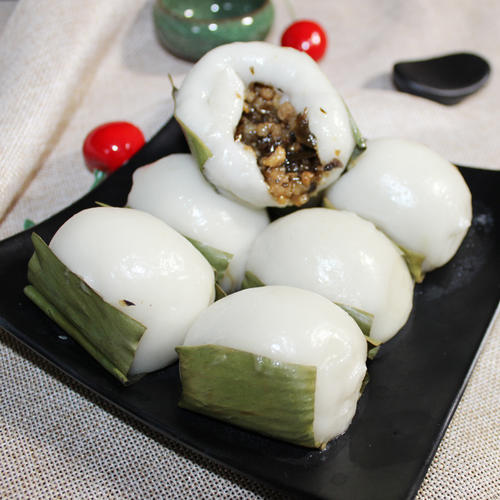
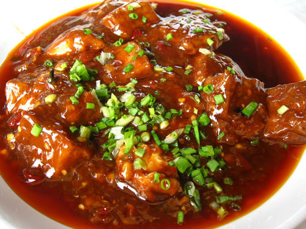
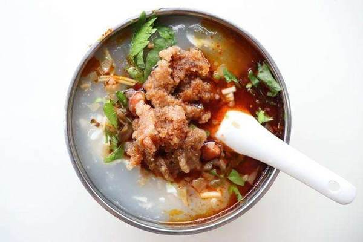

| 俗话说，民以食为天。乐山位于四川省中部，有着“海棠之国”的美誉，更是有着无数的美食等你探寻！ |
一、乐山钵钵鸡
二、翘脚牛肉 翘脚牛肉是乐山的非物质文化遗产，汤汁醇厚，味美鲜香，老汤翻滚之下，加之菜品，牛肉、白肚、毛肚、肺片、脑花等，随烫随食。跷脚牛肉配上鲜香的老汤，可谓色泽鲜艳，香气诱人，美味荡气回肠。真是安逸惨了。 
三、乐山麻辣烫

乐山甜皮鸭，乐山人称为“卤鸭子”“油糖鸭”，色泽棕红、皮酥略甜、香气宜人，于皮，或脆甜，或肥厚，附以细嫩的里肉。乐山甜皮鸭选料精良、工艺考究，除使用常规香料外并配以多种名贵中药材。沿用的是清朝御膳工艺，采用传统工艺精制而成。
叶儿耙，又叫艾馍，是为四川名小吃之一，乐山犍为县的特产，制作叶儿粑，首先从选料上就很考究，制作过程更是工艺精细，工序达到了六步以上，层层工序后，制作出来的叶儿耙具有色绿形美、细软爽口的特点，其色洁似乳，味道香醇可口，不沾盘、不沾筷、不沾牙，被称作三不沾叶儿粑，是极好的天然绿色食品。  |
六、西坝豆腐 西坝豆腐是四川乐山独具特色的传统名菜，色、香、味、形兼备，观之饱眼福，食之饱口福。西坝豆腐已有300多个品种，有选、泡、磨、烧、滤、包六道工序，道道都有特别的讲究。有文人品过西坝豆腐曾赞道:“四川豆腐甲天下，西坝豆腐冠四川;洁白如玉细若脂，几乎舌头一起咽。”可谓入则鲜美爽口，吞则醇香细腻，回味无穷。  |
七、夹丝豆腐干 乐山夹丝豆腐干，油炸的泡豆腐里面夹上萝卜丝，加上白糖和辣椒，或者芥末，放到调配好的糖醋汁里一过，然后一起吃下去，口感丰厚，你会知道，有时候，幸福就是这么容易。日食豆腐千两三粒，不妨长作乐山人。
|
八、狼牙土豆 狼牙土豆是乐山的一种地方风味小吃，主料为土豆，用特制刀具将土豆切成波浪外型，恰似犬齿而得名，再配以其他时令蔬菜一起炸后再佐以花椒面儿，盐，味精或者醋、糖醋等，色香味俱全，令人食指大动，香味更是满街飘香。
|
九、乐山豆腐脑 乐山豆腐脑是四川乐山风味小吃之一。在《故都食物百咏》中称道:“豆腐新鲜卤汁肥，一瓯隽味趁朝晖。分明细嫩真同脑，食罢居然鼓腹旧。”豆花配上辣椒，再配点香菜，色香味俱全。以美味的汤汁勾芡而成的汤头为主。  |